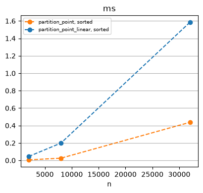

print(inspect.getsource(above_35))def above_35(score):
"""Return whether score is 35 or higher."""
return score >= 35
def above_35(score):
"""Return whether score is 35 or higher."""
return score >= 35
'Good: scores_sp[:pp1] = [40, 35, 80, 75, 80]''Bad: scores_sp[pp1:] = [5, 5, 10]''pp2 = 63''Good: scores_pp2[:pp2] = [91, 92, 35, 35, 40, 80, 95, 39, 50, 63, 92, 44, 43, 100, 63, 42, 88, 67, 92, 96, 85, 86, 80, 58, 59, 42, 94, 72, 46, 97, 59, 47, 93, 47, 94, 75, 67, 48, 64, 66, 61, 56, 72, 41, 75, 62, 73, 52, 82, 54, 37, 53, 96, 42, 77, 62, 68, 68, 40, 95, 66, 41, 50]''Bad: scores_pp2[pp2:] = [4, 8, 1, 30, 9, 34, 16, 2, 28, 32, 10, 30, 14, 14, 15, 23, 7, 14, 6, 16, 14, 26, 12, 13, 3, 13, 6, 19, 10, 32, 29, 18, 22, 1, 25, 28, 32]'| algo | shape | n | comparisons | predicates | swaps | ms | |
|---|---|---|---|---|---|---|---|
| 0 | partition_single_pass | 8 | None | 8 | 4 | 0.0057 |
| algo | shape | n | comparisons | predicates | swaps | ms | |
|---|---|---|---|---|---|---|---|
| 0 | partition_single_pass | random | 500 | None | 500 | 258 | 0.0854 |
| 1 | partition_single_pass | sorted | 500 | None | 500 | 0 | 0.0265 |
| 2 | partition_single_pass | reversed | 500 | None | 500 | 258 | 0.0419 |
| 3 | partition_single_pass | random | 1000 | None | 1000 | 501 | 0.2281 |
| 4 | partition_single_pass | sorted | 1000 | None | 1000 | 0 | 0.0534 |
| 5 | partition_single_pass | reversed | 1000 | None | 1000 | 501 | 0.0892 |
| 6 | partition_single_pass | random | 2000 | None | 2000 | 988 | 0.2383 |
| 7 | partition_single_pass | sorted | 2000 | None | 2000 | 0 | 0.1106 |
| 8 | partition_single_pass | reversed | 2000 | None | 2000 | 991 | 0.1631 |
'two_p_pp1 = 5''Passed: scores_2p[:two_p_pp1] = [40, 80, 35, 75, 80]''Failed: scores_2p[two_p_pp1:] = [5, 5, 10]''two_p_pp2 = 5''Passed: scores_d[:two_p_pp2] = [40, 80, 35, 75, 80]''Failed: scores_d[two_p_pp2:] = [5, 5, 10]'| algo | shape | n | comparisons | predicates | swaps | ms | |
|---|---|---|---|---|---|---|---|
| 0 | partition_two_pointer | 8 | None | 9 | 2 | 0.0036 |
| algo | shape | n | comparisons | predicates | swaps | ms | |
|---|---|---|---|---|---|---|---|
| 0 | partition_two_pointer | random | 2000 | None | 2521 | 483 | 0.2245 |
| 1 | partition_two_pointer | sorted | 2000 | None | 3004 | 0 | 0.2055 |
| 2 | partition_two_pointer | reversed | 2000 | None | 2008 | 996 | 0.2067 |
| 3 | partition_two_pointer | random | 8000 | None | 9990 | 1994 | 0.9462 |
| 4 | partition_two_pointer | sorted | 8000 | None | 11984 | 0 | 1.0539 |
| 5 | partition_two_pointer | reversed | 8000 | None | 8000 | 3984 | 0.8470 |
| 6 | partition_two_pointer | random | 32000 | None | 39983 | 7971 | 3.8695 |
| 7 | partition_two_pointer | sorted | 32000 | None | 47954 | 0 | 2.2725 |
| 8 | partition_two_pointer | reversed | 32000 | None | 32000 | 15954 | 2.8319 |
Student = namedtuple("Student", ["name", "score"])
def student_above_35(s):
return above_35(s.score)
students = [
Student("Ana", 22),
Student("Ben", 41),
Student("Cai", 35),
Student("Diya", 90),
Student("Eli", 18),
Student("Far", 67),
]
n = partition_two_pointer(students,0, len(students), student_above_35)
f'Passed: {students[:n]}'"Passed: [Student(name='Far', score=67), Student(name='Ben', score=41), Student(name='Cai', score=35), Student(name='Diya', score=90)]"'is_partitioned(scores_isp, 0, len(scores_isp), above_35) = False''scores_isp = [40, 35, 80, 75, 80, 5, 5, 10]''is_partitioned(scores_isp, 0, len(scores_isp), above_35) = True'good = [40, 60, 75, 80, 20, 5, 3, 10]
raw = [5, 40, 3, 10, 20, 60, 75, 80]
isp = Cost(repeats=1)
_ = isp.run(is_partitioned, good, 0, len(good), above_35,
shape='partitioned', operations=('predicates', 'ms'))
_ = isp.run(is_partitioned, raw, 0, len(raw), above_35,
shape='broken', operations=('predicates', 'ms'))
isp.frame| algo | shape | n | comparisons | predicates | swaps | ms | |
|---|---|---|---|---|---|---|---|
| 0 | is_partitioned | partitioned | 8 | None | 9 | None | 0.0027 |
| 1 | is_partitioned | broken | 8 | None | 3 | None | 0.0027 |
'partition_point_linear(good, 0, len(good), above_35) = 4''partition_point_linear(raw, 0, len(raw), above_35) = 0'front = [5, 3, 10, 20, 8, 1, 2, 4]
mid = [40, 60, 75, 80, 20, 5, 3, 10]
end = [40, 60, 75, 80, 90, 41, 35, 50]
ppl = Cost(repeats=1)
_ = ppl.run(partition_point_linear, front, 0, len(front), above_35,
shape='point 0', operations=('predicates', 'ms'))
_ = ppl.run(partition_point_linear, mid, 0, len(mid), above_35,
shape='point 4', operations=('predicates', 'ms'))
_ = ppl.run(partition_point_linear, end, 0, len(end), above_35,
shape='point 8', operations=('predicates', 'ms'))
ppl.frame| algo | shape | n | comparisons | predicates | swaps | ms | |
|---|---|---|---|---|---|---|---|
| 0 | partition_point_linear | point 0 | 8 | None | 1 | None | 0.0024 |
| 1 | partition_point_linear | point 4 | 8 | None | 5 | None | 0.0022 |
| 2 | partition_point_linear | point 8 | 8 | None | 8 | None | 0.0015 |
Precondition: is_partitioned(a, first, last, pred). Returns the partition point of [first, last).
'is_partitioned(good, 0, len(good), above_35) = True''partition_point(good, 0, len(good), above_35) = 4''is_partitioned(raw, 0, len(raw), above_35) = False''partition_point(raw, 0, len(raw), above_35) = 2'front = [5, 3, 10, 20, 8, 1, 2, 4]
mid = [40, 60, 75, 80, 20, 5, 3, 10]
end = [40, 60, 75, 80, 90, 41, 35, 50]
pp = Cost(repeats=1)
_ = pp.run(partition_point, front, 0, len(front), above_35,
shape='point 0', operations=('predicates', 'ms'))
_ = pp.run(partition_point, mid, 0, len(mid), above_35,
shape='point 4', operations=('predicates', 'ms'))
_ = pp.run(partition_point, end, 0, len(end), above_35,
shape='point 8', operations=('predicates', 'ms'))
pp.frame| algo | shape | n | comparisons | predicates | swaps | ms | |
|---|---|---|---|---|---|---|---|
| 0 | partition_point | point 0 | 8 | None | 4 | None | 0.0026 |
| 1 | partition_point | point 4 | 8 | None | 3 | None | 0.0040 |
| 2 | partition_point | point 8 | 8 | None | 3 | None | 0.0019 |

'pp_s1 = 5''Good: scores_stablep[:pp_s1] = [40, 35, 80, 75, 80]''Bad: scores_stablep[pp_s1:] = [10, 5, 5]'| algo | shape | n | comparisons | predicates | swaps | ms | |
|---|---|---|---|---|---|---|---|
| 0 | partition_stable | 8 | None | 8 | 8 | 0.0054 |
| algo | shape | n | comparisons | predicates | swaps | ms | |
|---|---|---|---|---|---|---|---|
| 0 | partition_stable | random | 512 | None | 512 | 32233 | 2.3414 |
| 1 | partition_stable | sorted | 512 | None | 512 | 0 | 0.0279 |
| 2 | partition_stable | reversed | 512 | None | 512 | 65500 | 4.3352 |
| 3 | partition_stable | random | 1024 | None | 1024 | 128946 | 9.0758 |
| 4 | partition_stable | sorted | 1024 | None | 1024 | 0 | 0.0573 |
| 5 | partition_stable | reversed | 1024 | None | 1024 | 262095 | 18.0324 |
from programming_first_principles.algorithms.rearrange import swap
def v_partition_single_pass(b, pred):
n = 0
a = list(b)
for i in range(len(a)):
val = a[i]
predicate = pred(val)
if predicate:
if n != i:
swap(a, n, i)
n += 1
array_state = a[:]
return n, a
# scores_vsp = [5, 40, 3, 10, 20, 60,75,80]
# LiveEdit.inspect_run(v_partition_single_pass, scores_vsp, above_35)